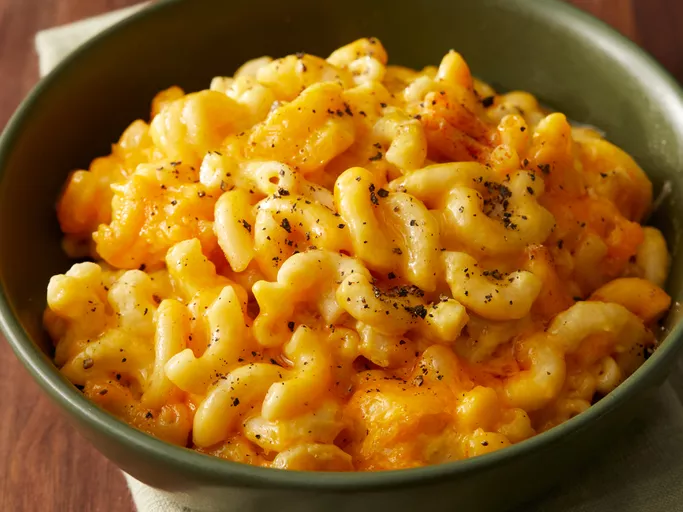

Mac and Cheese

Description
This dump and cook mac and cheese recipe is sure to be a favorite in your home!
Ingredients
- Macaroni
- Butter
- Seasonings
- Cheese
- Milk
- Eggs
- Canned Soup
- Paprika
Steps
- Boil pasta
- Stir in butter, seasonings, and half of the cheese
- Whisk milk and eggs together, stir in pasta
- Sprinkle remaining cheese overtop
Cook on low for 3 1/2 hours